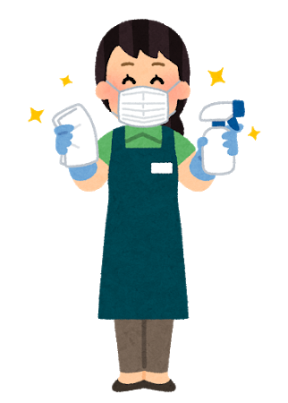
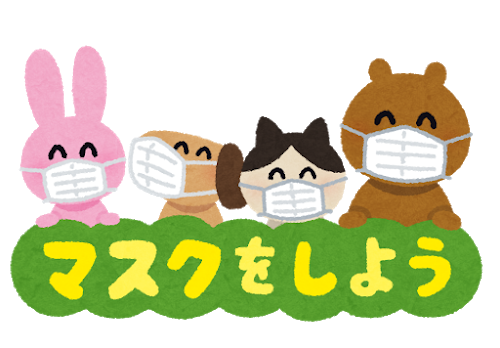
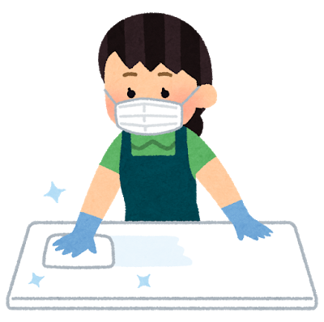
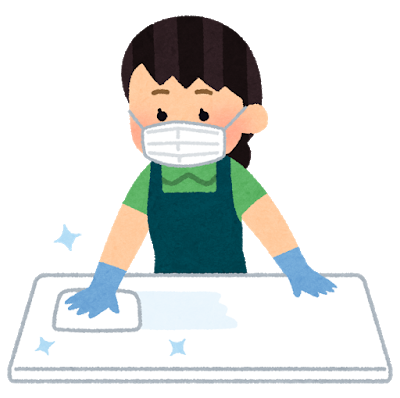
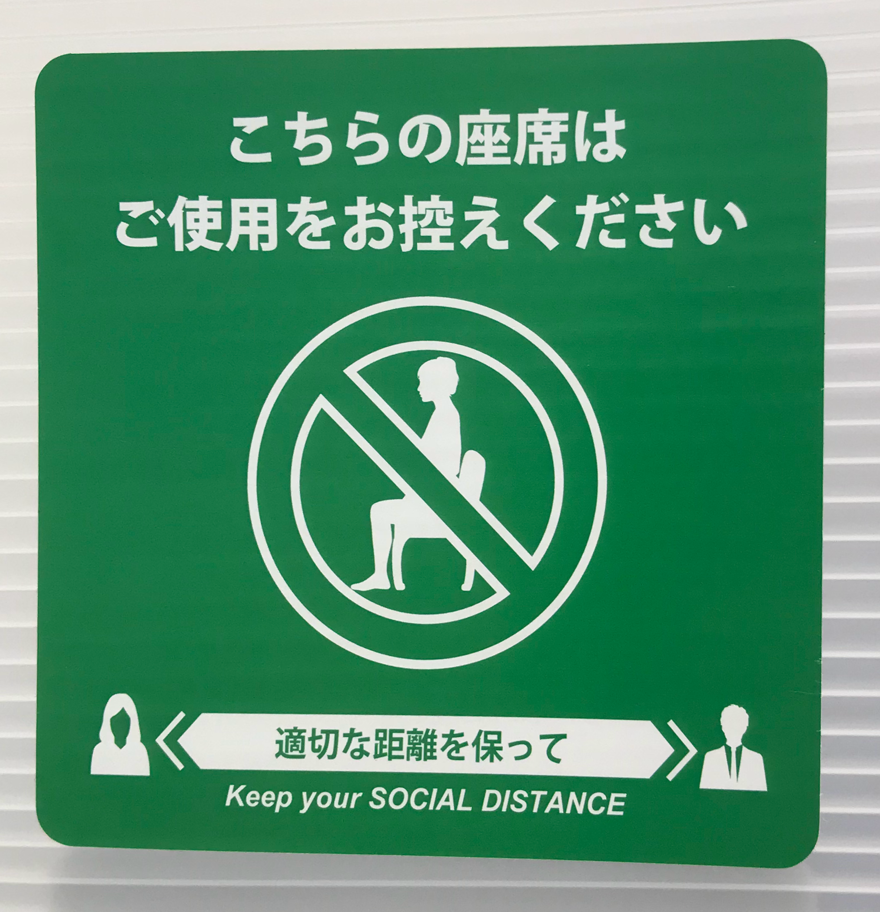
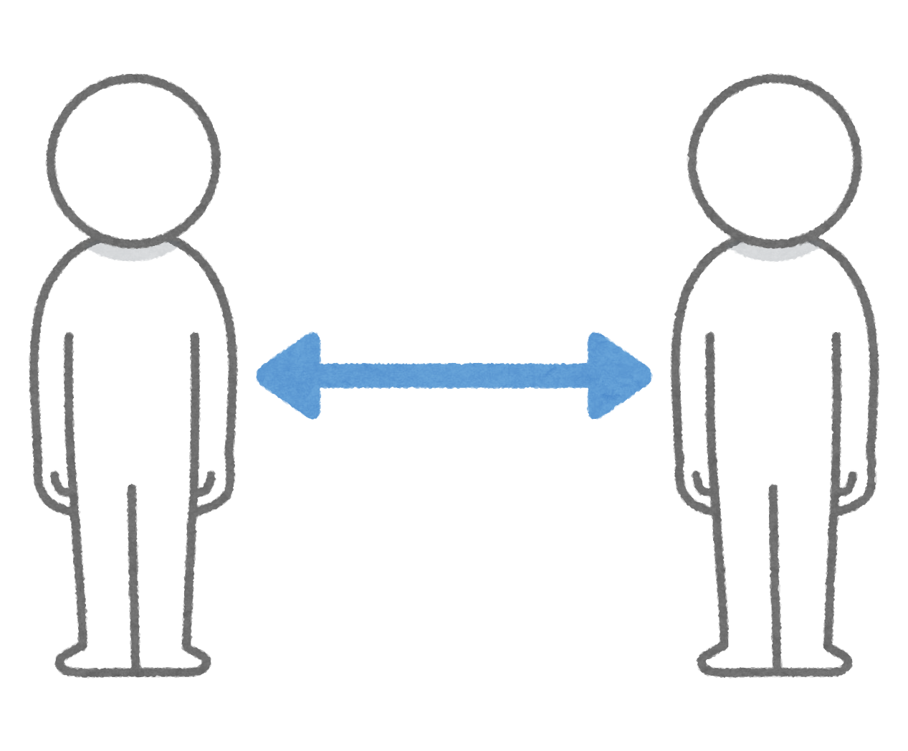
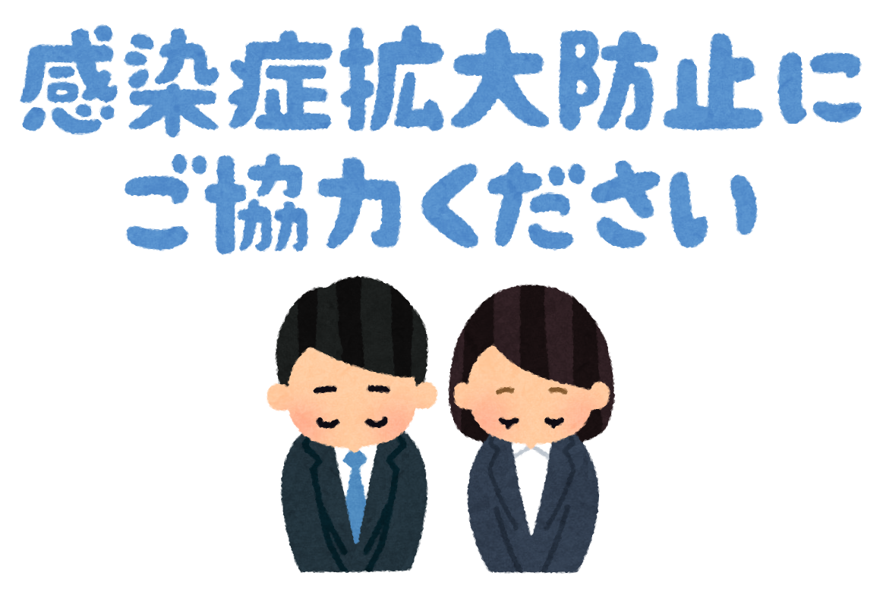

■コロナウイルス対策について
 千葉工業大学ではコロナウイルス感染拡大防止のため、さまざまな対策をとっています。 学生食堂でもコロナ対策として、新たにルールを設けました。
ルール１ : 利用したイスは大きく引き出しておく
新型コロナウイルス感染対策にあたり、清掃・消毒のため、利用された席がわかりやすい ように引き出しておいてください。学食スタッフが除菌作業を行います。
 

ルール２ : マスクを外しての会話は控える
新型コロナウイルスは飛沫感染です。友人や周りにいる人たちを感染させないためにも、お食事以外でマスクを 外す行為はお控えください。会話もできるだけお控えください。伝えたいことがある場合はマスクの着用を よろしくお願いします。

ルール３ : お食事が済み次第、席をお譲りください
蜜を避けるため、お食事以外でのご利用はお控えください。少しでも多くの学生のみなさまがお食事できるよう、 ご協力お願いします。
ルール４ : 間隔を開けてのご利用
こちらも蜜を避けるため、座席は間隔を開けてご利用ください。使用できない座席の前には、使用不可のステッカーが 貼ってありますので、貼られている座席はご利用できません。適切な距離を保ってお食事してください。
 感染症拡大防止のため、みなさまのご協力よろしくお願いします。
